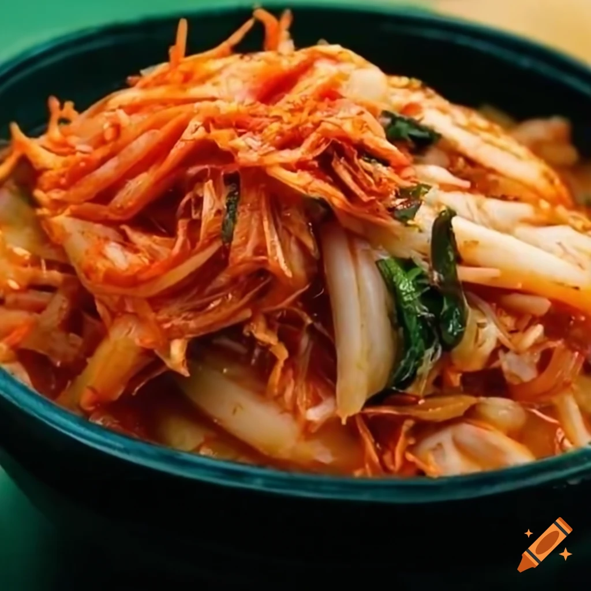

Makaron ryżowy z kimchi
Składniki:
250g makaronu ryżowego
1-2 szklanki kimchi (według upodobań)
2 łyżki oleju roślinnego
2 ząbki czosnku, posiekane
2-3 zielone cebulki, posiekane (opcjonalnie)
2 łyżki sosu sojowego
1 łyżka pasty z chili (opcjonalnie, jeśli lubisz ostre dania)
Sól do smaku
Pieprz do smaku
Sezam do dekoracji (opcjonalnie)
Pokrojona natka kolendry do dekoracji (opcjonalnie)

Instrukcje:
Gotuj makaron ryżowy zgodnie z instrukcjami na opakowaniu. Po ugotowaniu odcedź go i przelej zimną wodą, aby zatrzymać proces gotowania. Odstaw na bok.
W dużym rondlu lub woku rozgrzej olej roślinny na średnim ogniu.
Dodaj posiekany czosnek i smaż przez około 1 minutę, aż zacznie pachnieć.
Dodaj kimchi do rondla i smaż przez około 3-4 minuty, mieszając od czasu do czasu.
Jeśli używasz pasty z chili, dodaj ją teraz i dokładnie wymieszaj.
Dodaj ugotowany makaron ryżowy do kimchi i dobrze wymieszaj, aż wszystkie składniki się połączą.
Dodaj sos sojowy, sól i pieprz do smaku. Możesz również dodać pokrojoną zieloną cebulkę, jeśli chcesz.
Smaż mieszankę przez kolejne 2-3 minuty, mieszając, aby wszystkie składniki się dobrze połączyły i makaron został podgrzany.
Przed podaniem udekoruj danie sezamem i posiekaną natką kolendry, jeśli używasz.
Makaron ryżowy z kimchi jest gotowy do podania! Możesz również dodać dodatkowe składniki, takie jak jajko sadzone na wierzchu lub pokrojone warzywa, aby dostosować smak i wartość odżywczą dania.